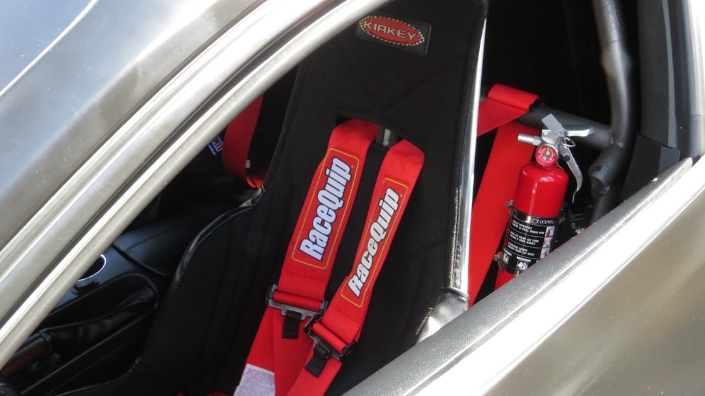
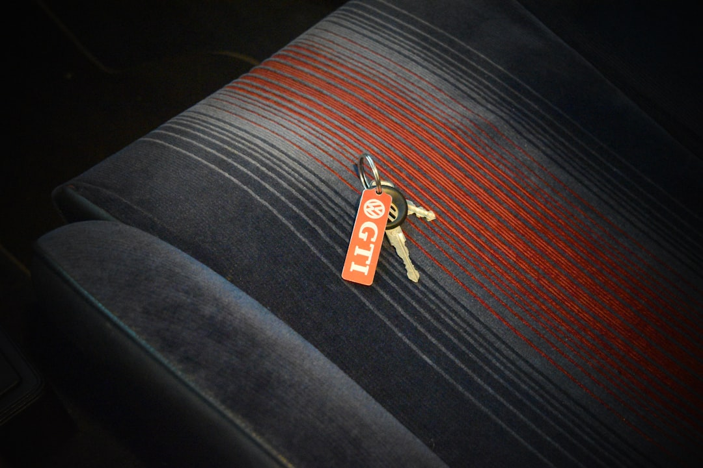
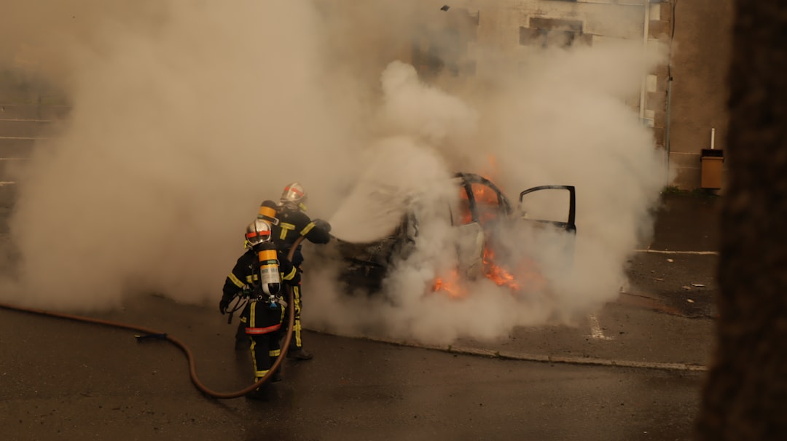

Classic car owners may have additional reasons to select a no-drill car fire extinguisher mount. Maintaining original interior panels, carpets, floors, and structural components can be an important part of preserving a classic vehicle. A mounting bracket designed around existing mounting locations provides an alternative to creating permanent holes solely for an extinguisher installation.
Whether the intended application is a track car, sports car, daily driver, classic, modified vehicle, truck, EV, or off-road build, a dedicated fire extinguisher mount for car use can provide a secure and organized installation. F4Fabrication offers purpose-built solutions designed to make the extinguisher a properly mounted component of the vehicle.
The manufacturing process is another consideration when evaluating a fire extinguisher mount for car use. F4Fabrication develops brackets using CAD design and precision manufacturing methods. Accurate design allows mounting points, dimensions, bends, and clearances to be planned around the intended vehicle. The resulting fire extinguisher bracket can then provide a structured mounting platform for the extinguisher and its associated holder.

F4Fabrication focuses on vehicle-specific mounting solutions. Instead of approaching every vehicle with a single universal design, its car fire extinguisher brackets are developed for individual applications. Vehicle interiors can differ significantly in seat rail construction, available space, mounting points, floor design, and seat positioning. Choosing a fire extinguisher mount for car make and model can therefore provide a more suitable installation than adapting a generic bracket.
Appearance is another consideration for enthusiast vehicles. A bracket should perform its primary mounting function, but a clean installation can also complement a carefully maintained interior. Vehicle-specific mounting helps reduce the improvised appearance sometimes associated with generic brackets.
Preserving the vehicle can be especially relevant for classic cars, collectible vehicles, performance cars, and enthusiast-owned road cars. Drilling through interior components simply to install an extinguisher holder may not be desirable. A no-drill fire extinguisher bracket designed around existing attachment locations offers a cleaner alternative.
The quality of a car fire extinguisher mount is also influenced by how it is designed and manufactured. F4Fabrication uses CAD-based design and precision production methods for its brackets. The design process allows dimensions, mounting locations, and available interior space to be considered before production. This results in a mounting component developed specifically for its intended automotive application.
Track-day drivers frequently prioritize an organized interior. Helmets, tools, cameras, data equipment, and other accessories may already form part of the vehicle setup. Adding a purpose-built fire extinguisher mount for car track use allows the extinguisher to have a defined location rather than becoming another loose piece of equipment.
The same advantages can apply to daily drivers. Fire extinguisher mounting is not limited to dedicated competition vehicles. Owners of road cars may also prefer to carry an extinguisher securely rather than allowing it to move around in the trunk or passenger compartment. F4Fabrication's selection covers different vehicle categories, allowing customers to find mounting solutions appropriate for their particular application.
vehicle fire extinguisher holder
Accessibility should also influence bracket selection. A securely mounted extinguisher provides limited practical value if it is extremely difficult to reach. Seat rail mounting can offer a convenient compromise between security and accessibility, depending on the vehicle. The chosen position should also avoid interfering with seat operation, controls, passengers, and other interior components.
An extinguisher that is placed loosely inside a vehicle can move during braking, acceleration, cornering, or travel over uneven roads. Storage inside the trunk may keep it away from occupants, but it can also reduce accessibility, particularly when luggage or other equipment is present. Installing a dedicated fire extinguisher mount for car interiors establishes a permanent and predictable mounting location.
F4Fabrication also supports applications beyond its existing product range through custom bracket requests. This can be useful for less common vehicles or configurations where a standard vehicle-specific product is not currently offered. A custom approach maintains the focus on purpose-built mounting rather than forcing a universal component into an unsuitable position.
F4Fabrication takes a vehicle-specific approach to fire extinguisher mounting. Cars from different manufacturers use different floor layouts, seat rails, seat mounting points, and interior dimensions. Even different generations of the same vehicle can have substantial differences. For this reason, a bracket designed around a particular application can provide advantages over a universal mounting solution.
When talking about selecting a fire extinguisher mount for car use, buyers should consider more than simply whether a bracket can physically hold an extinguisher. Vehicle fitment, construction, mounting location, installation requirements, accessibility, extinguisher compatibility, and interior clearance should all form part of the decision.
Aftermarket seats and seat rails may also change fitment. A bracket developed around factory seat mounting points may require a different installation approach when the original seating system has been replaced. Checking the vehicle configuration before purchasing helps ensure the chosen car fire extinguisher bracket is appropriate for the intended setup.
The extinguisher itself should also be considered. Different fire extinguishers vary in diameter, overall dimensions, capacity, and weight. The extinguisher holder or quick-release system may also use specific mounting arrangements. Buyers should confirm that the complete combination of car fire extinguisher mount, holder, hardware, and extinguisher is compatible.
Factory seat rails provide a practical location for many vehicle fire extinguisher installations. F4Fabrication designs its applicable brackets to connect to existing seat rail mounting points. This means a car owner can install a fire extinguisher bracket without unnecessarily drilling into the vehicle. A no-drill installation is particularly useful for drivers who want to preserve the condition of their interior or avoid permanent modifications.
Performance and track vehicles are common applications for car fire extinguisher brackets. These vehicles frequently contain aftermarket equipment, performance modifications, and other components that make organized interior mounting especially desirable. A dedicated fire extinguisher mount for car track applications provides a clean way to include an extinguisher as part of the vehicle setup.
For drivers looking for a fire extinguisher mount for car interiors, the objective is straightforward: securely position the extinguisher while maintaining practical access and appropriate vehicle fitment. F4Fabrication's dedicated car fire extinguisher brackets are designed around this objective, providing mounting solutions for a diverse selection of automotive applications.
Compatibility should always be checked before installation. Fire extinguishers are available in different dimensions and weights, and holders can use different attachment arrangements. The fire extinguisher mount for car installation, extinguisher holder, hardware, and extinguisher itself should work together as a complete assembly. Customers should confirm the specifications associated with the selected bracket and extinguisher.
F4Fabrication provides a specialized approach to vehicle fire extinguisher mounting. Through vehicle-specific designs, precision manufacturing, strong construction, and mounting solutions based around existing vehicle attachment points, F4Fabrication gives drivers an alternative to generic brackets and unsecured extinguisher storage.
